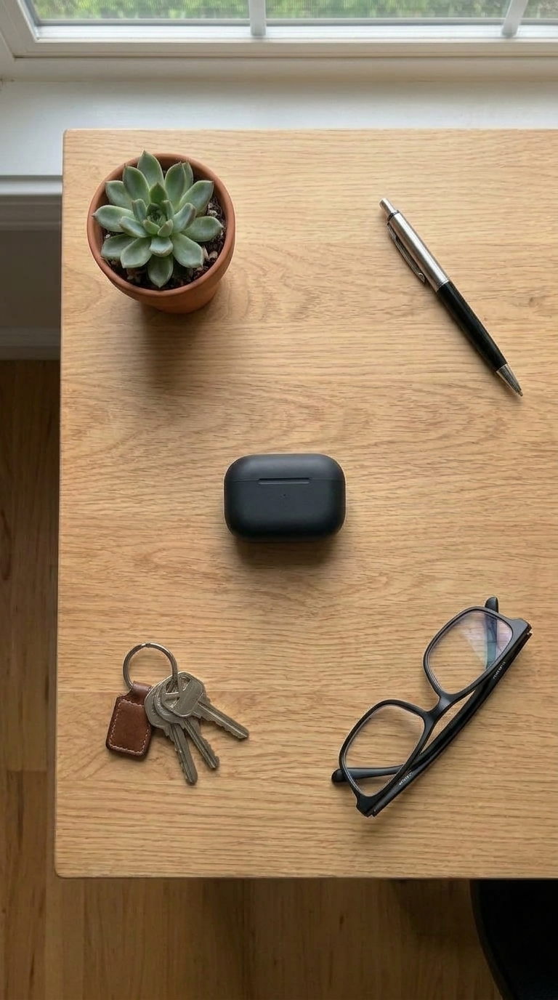

Opening camera…

LIVE
Circle & Search
Circled — tap to refine ›
Circle & Search
Get specific
Circle an item, then add a word to narrow your results.
+
blue
=

$34.99

$49.99

$22.49
Retake
Search Walmart